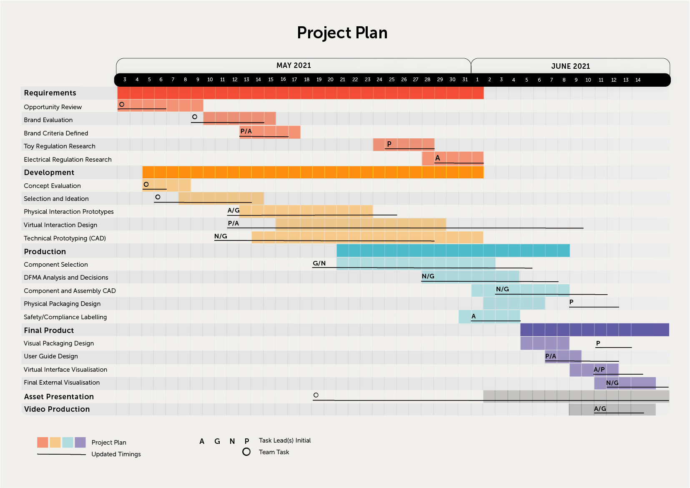

Nintendo Rev
A video game interface which encourages physical activity among children,
designed and branded as part of the Nintendo product range.
Group project with Nadav Grunberg, Paula Castillero-Garcia and George Gunn
Nintendo were not engaged in any consultancy or collaborative capacity with this project and the outcome is in no way endorsed by them.
Any promotion is limited to personal and educational use.
Nintendo Rev is a gaming interface with two parts: a spinning hand-held controller and a pressure sensitive LED mat.
These are used together to play games which challenge the user's motor skills and cardiovascular fitness.
The system can be used in small indoor spaces, with no additional equipment or parental supervision, so makes
exercise accessible and enjoyable for children who would not otherwise take part in any sport.
We branded Rev as part of the Nintendo range, because of our shared motive: to "make children smile".
Each group member had a set role within the project: George - Chief Operational Officer, Nadav - Chief Technical Officer, Paula - Chief Creative Officer, and myself - Chief Executive Officer. Our tasks and timescales are outlined below.
